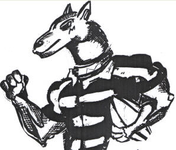
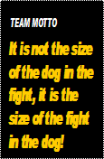
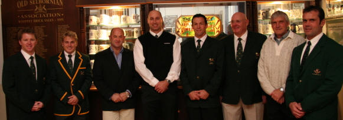
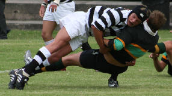
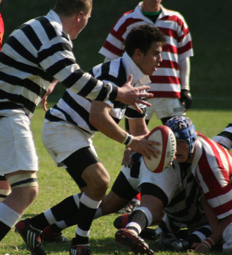

ACADEMIC: [Grade 8] [Grade 9] [Grade 10][Grade 11][Grade 12]
SPORT: [Water Polo] [Rugby]
CLUBS / SOCIETIES:[Outdoor Club][Skateboarding]
INTERHOUSE:[Crewe House]
CLASS TEACHER:[Grade 8 C]
CONTACT DETAILS:[Contact Me]
YOUR COACH: [Mr Miles]
COACHING MODULES: [New laws] [Defense] [Passing Skills] [General Drills] [Position Specific Training] [Backline Play] [Forward Play] [Evasion Skills] [Rucking Skills] [The Rugby Mind] [Inspiration]
U15A: [The Team] [Practices and Meetings] [Results] [Training Squad] [Latest Team] [Team Roles] [Averages] [FitnessStandards][Season Report]

Emihle Baneti top try scorer U/15A 2008
WEB SITES:[Super Rugby][Rugby 365]
Selborne's Springboks:

From Left to Right: Josh Fowles, Brent Russell, Keith Andrews, Mark Andrews, Andre Vos, Andre De Wet, Ray Carlson, and Barry Moldenhauer
2007 Season in Review: This season will go down in history as a successful one. The first team scored the most tries in the country and the U15A team beat both Dale and Queens (Away) for the first time since U10. There is a strong group of U14's and we can all look forward to a great 2008 season ahead!
2008 Preseason Rugby Festivals:
The 2008 U15A team played in the Queens U15 Easter Rugby Festival and recorded the following results:
Beat KES 15 - 5
Beat NORTHWOOD 58 - 0
HUDSON PARK withdrew from the game, due to injuries.
The 1st XV took part in the Kearsney Festival and they recorded the following results:
Beat KEARSNEY 39 - 24
Beat KZN Development 64 - 0
Lost AFFIES 10 - 13


Dylan De Wilzen gets his man Cameron Opperman with ball in hand
[Home]